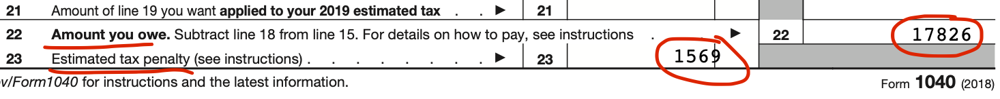
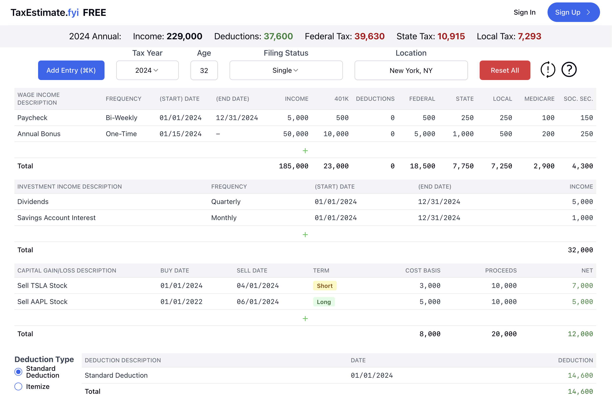

Why I Built TaxEstimate.fyi
I used to only think about taxes in April. But as my income increased and diversified, I ran into surprise tax bills and penalties. I then created complicated spreadsheets, read the IRS tax code and paid my accountant a lot.
For most tax situations, people shouldn't have to do any of that, so I built TaxEstimate.fyi to share my tax estimation solution with everyone.
The Surprise Tax Bill
Like most people, I started earning a salaried income with taxes withheld each paycheck. Every April, I'd pay a bit to turbotax, enter some data, and get a small refund or pay a few hundred. A bit annoying, but no big deal.
As the years passed, my salary increased, and I started adding new income sources (selling stocks, interest income, etc.). Still, I assumed my prior of leaving taxes off until April would be fine—the additional non-withheld income sources weren't big.
But one April, TurboTax revealed a significant liability. The software indicated Matthew owed "$17,826 and a $1,569 penalty for underpayment."

Shocked, he spent the rest of his day digging through income statements and his tax return, looking for some obvious mistake. By the end, he realized there was no mistake, and he actually owed $17,826. Time to sell a bunch of stock (more taxes!) to pay it off.
The reason for this discrepancy: federally mandated withholding amounts diverge from what people actually owe, and this divergence increases with higher income levels.
The Excel Spreadsheet
So he got serious to avoid any future surprise bills and penalties. He read the IRS tax code, made an excel spreadsheet, and consulted an accountant. Over the years he continued refining it, adding more complexity as income sources diversified, and getting it closer to what he actually owed—eventually just a few hundred dollars off.
But the spreadsheet had its limits. Without code it couldn't handle many edge cases well, so it was littered with workarounds. Which meant he often didn't fully trust the spreadsheet when making updates.
Furthermore, whenever he told the story of his spreadsheet to coworkers, he discovered most of them have the same tax estimation issue. They "solve" it by either paying an accountant a lot, eating the penalties, or guestimating their taxes and hoping for the best.
TaxEstimate.fyi
So he decided to make a webapp out of his spreadsheet: TaxEstimate.fyi—you can clearly see the spreadsheet design influences.

He believes it's better than what's out there (smartasset, turbotax, IRS) for a few reasons:
Quick & Easy Input
The IRS withholding estimator is so long and complicated that he's always given up before the end.
TaxEstimate.fyi lets users quickly add income sources and get immediate cumulative calculations.
Intra-Year Tax Calculations
All other calculators ask your full year's income, then give you a single number. But people's income is distributed, often unevenly, throughout the year. TaxEstimate.fyi uniquely lets you select any date in the year, and see how much you owe up to that date. This is great for quarterly payments, because you won't need to redo an estimation 4 separate times.
Transparent Calculations
He dislikes how all the estimators just give you a final number with zero or minimal explanation. It really erodes trust if you don't know where the number comes from. TaxEstimate.fyi lets you click into each tax component to see a detailed breakdown of how it's calculated, along with relevant links to the official IRS tax code.
Save & Update
People have taxable events throughout the year, i.e. deciding to sell some stock. When that happens, no one wants to redo an entire tax estimation to include that one change. TaxEstimate.fyi lets you save your tax estimate and update just that one component later. This makes it easy to keep track of all your income sources and tax liabilities throughout the year.
I hope you find this tool useful! If you don't, it doesn't cover your use case, or have any other suggestions, I'd love to hear from you. Shoot me a message at contact@taxestimate.fyi.